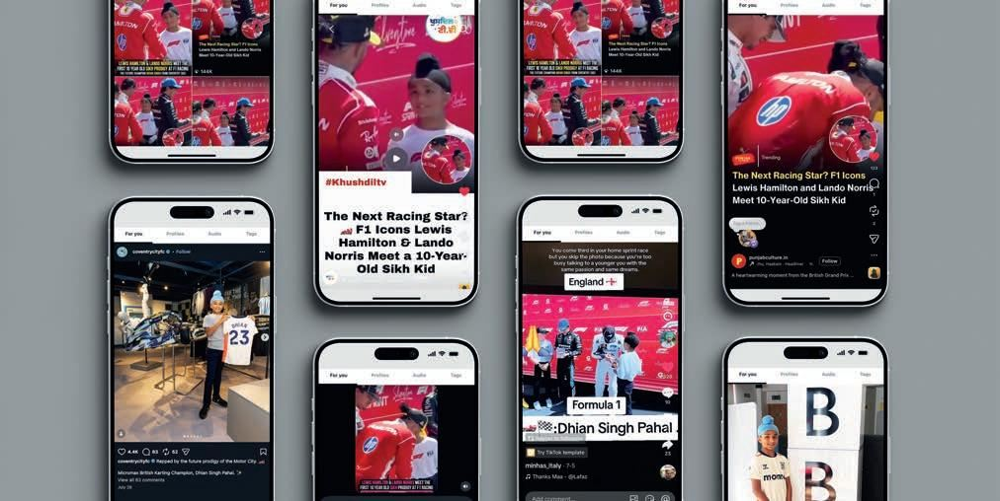
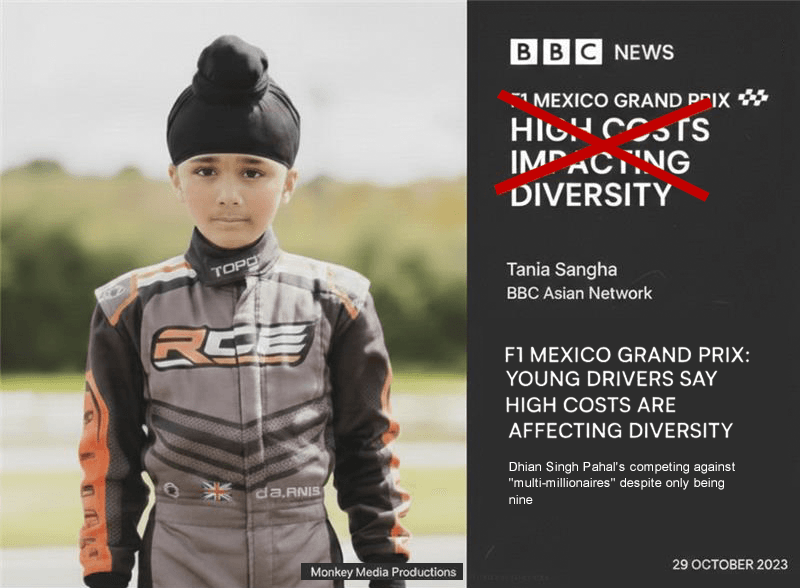
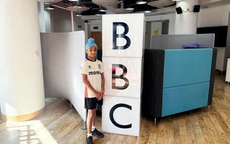
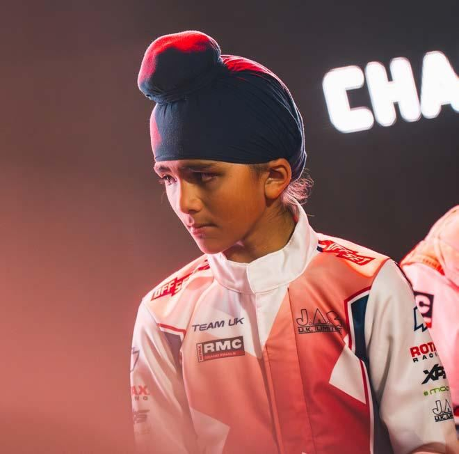
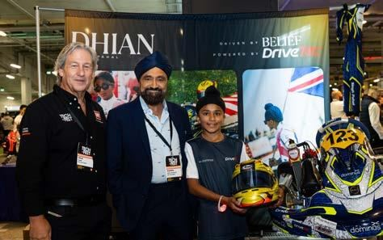
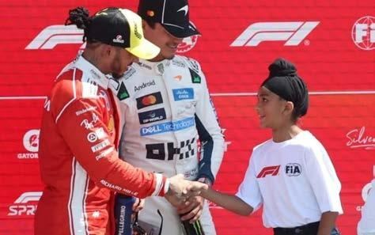
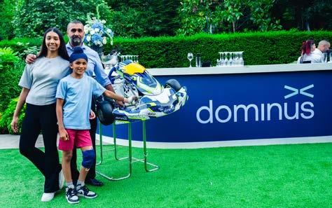
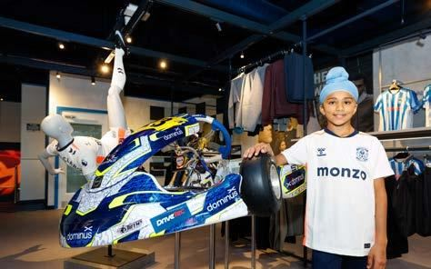

Media
The word is spreading.
From BBC national news to the Coventry Observer, the story of one of Britain's most-watched young karting drivers travels on its own momentum.
2M+
Views of British GP content
4
BBC radio features in four months
1
National BBC News feature
5+
Major features & podcasts
01 — In the Press
Coverage that wrote itself.

BBC News2023"Young drivers say high costs are affecting diversity"
Newsbeat — national feature
BBC RadioSeries"Young Sikh dreams of becoming an F1 driver"
Desi Stories — BBC Sounds
Coventry Observer14 Nov 2025"Coventry driver makes history after winning British karting title"
Motorsport
Coventry Observer7 Aug 2026"Karting champion becomes first recipient of Coventry City's 2026/27 away kit"
Motorsport Podcast2026"From underdog to British karting champion" — Dhian's mindset and beliefs on the road to professional motorsport
Below The Belt with Gian Gill KartcomInternationalRMCIT international race press — Dhian in the Mini Max field at Le Mans
Kartcom International02 — On the Clips
The moments, on camera.
03 — Moments
The moments behind the numbers.

British GPMeeting Lewis Hamilton
Silverstone, on the Grand Prix weekend — the meeting that generated 2M+ views across Instagram and TikTok.
2M+ views
PartnershipDominus joins as Title Partner
The 2026/27 title partnership, announced with Sukhpal Singh Ahluwalia — a British champion backed by a British success story.
Title Partner · 2026/27
CommunityTech Fest, Coventry
Taking the kart and the story to Coventry's community events — the motor city meeting its next driver.
Community Activation04 — Press & Media
Working with the media.
For imagery, broadcast-ready clips, accreditation and interview requests, contact the team directly. Dhian is available for broadcast and print interviews around race weekends and in Coventry.
Media Enquiries
Next — Partnership
The story is only growing.
Get your brand beside it while the spotlight is rising.